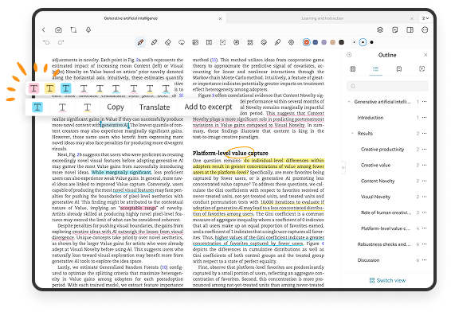

述职前一周才发现：我居然用错了手写笔记 App 这么久
年底汇报季的一个加班夜，我用了三年的 PDF 阅读器在关键时刻掉了链子——直到同事甩来一个不显眼的推荐，才明白手写笔记这件事我一直在凑活。
那个翻到凌晨的周三
年终述职材料要做季度复盘的补充批注，我把手机里存了三个月的 PDF 打开，手指划了半天，翻不到两个月前那次客户沟通我随手写的那两句话——当时只是在阅读器里画了个荧光笔高亮，现在高亮倒是在，边上手写的批注内容却因为跨了好几个版本同步没了。
更糟的是，投屏演示那天老板临时点名要我指某个具体数据的来源页码，我在屏幕上来回戳了半分钟定位不到，最后还是同事把他平板凑过来让我借笔在上面圈了一下才圆过去。
回去后我盯着手机里那一堆 PDF 阅读器、笔记 App、云文档客户端的图标发呆——我到底需要个什么东西？
一个不太起眼的推荐
同事扔了个名字过来："试试starnote官网吧，我备考二建那会全靠它。"
说实话我对笔记类 App 已经麻木了。Notion 太重、GoodNotes 太贵、系统自带的不够用，换过三个已经不想折腾。但述职的事悬着，就当病急乱投医去下载装了一个。
打开第一眼我就知道不一样——首页直接问我要不要导入 PDF，我把那份翻了半宿的季度复盘拖了进去，屏幕上立刻出现厚厚的文档页，底部是一排工具栏，钢笔、荧光笔、橡皮擦、套索，跟我见过的手写笔记界面差不多，但有几个按钮我不太熟悉。

第一天就救了急
第二天早上赶去公司，地铁上打开 starnote，直接在 PDF 上手写批注。这次我特意试了两个之前阅读器做不到的事：
一是把客户会议的截图照片也导了进来——当时我只是随手拍了一张白板的照片，现在在 starnote 里点「导入图片」，直接变成了一张可以继续写的新页面。照片上本来就写着各种流程图，我用套索工具圈了其中一个模块，再用形状工具补了几个箭头，跟现场白板上的内容对上了。如果还是用原来的阅读器，这张照片要么存相册里跟 PDF 分开，要么勉强贴进去但没法在上面继续画。
二是演示用的激光笔。这功能我之前以为是会议软件自带的，没想到 starnote 里就有——打开工具栏里的激光笔，笔尖在屏幕上变成一个小红点，我把平板连上公司的大显示器，用笔在 PDF 上"点"数据页码，红点跟着笔尖跑，会议室里所有人一眼就能跟上我讲的位置。调了下参数，把停留时间设成 2 秒——starnote文档里列了能调的选项：光标颜色、大小、停留秒数，我笔移走之后红点会多留一会儿，不会因为手速快显得乱。
被番茄钟和智能搜索圈粉
述职材料改到第四天，我发现 starnote 里藏着的东西比我想的多。
计时器功能是在工具栏角落偶然点到的——本来只是想快速看一下时间，没想到直接弹出一个计时器窗口，默认就是番茄钟的 25+5 模式。我把窗口缩小拖到页面右下角，透明度调低，刚好不挡 PDF 正文。改材料累了就开 25 分钟专注写笔注，到点震一下提醒休息 5 分钟，休息完自动再开下一轮。那天下午的效率比前三天加起来还高，连后台切去查资料计时器都不停。
真正让我决定把旧笔记 App 删掉的是智能搜索。
述职前一天，我需要从三个月的批注里找到那次客户沟通的具体结论。之前在老阅读器里翻了半小时没找到，这次在 starnote 的搜索框里敲了"客户沟通"——结果按笔记本和页面分组列出来，每条结果带页面缩略图，匹配的关键词还高亮标着。更狠的是，我当时手写在 PDF 旁边的那两句话，starnote 居然也给搜出来了。
后来才知道这功能叫手写识别搜索，需要在设置里开了之后在后台对所有笔迹做 OCR。我那本 PDF 加手写批注少说也有二十来页，索引花了大概一分钟，但之后搜任何东西都是秒出。原来我之前翻半天不是没写，是搜不到。
述职那天
汇报开始前我做了最后一件事：把 starnote 里改完的笔记导出。这个 app 的自定义导出选项挺灵活的，可以导成带所有手写批注的 PDF，也可以把单页分享出去——我把汇报用的那几页单独导出来存了个备份。
整个述职 40 分钟，老板两次让我"指一下那个数据来源"，我都在平板上三秒定位到了页码，激光笔一扫就完事。汇报完同事凑过来问我换了什么笔记工具，我把平板递给他说："starnote官网自己看。"
收尾
后来又用了两周，发现 starnote 的空白模板也挺好用的——不想用 PDF 底页的时候，新建个方格纸笔记本，随手打草稿、列提纲、演算法都行，页面留白还能自己调密度和颜色。我给它专门建了一个"灵感速写"的笔记本，每天早上通勤的 20 分钟在上面写两笔，比在手机备忘录里敲文字舒服多了。
至于之前用了三年的那个 PDF 阅读器？已经卸载了。不是它不好，是我之前以为"批注"和"搜索"是互斥的两件事——有了批注的手写笔记，搜索起来就只能靠翻页。starnote 把这两件事捏到了一起，还顺便带了激光笔、番茄钟、图片导入，让我在汇报、备考、日常写东西这几个不同场景下只用一个工具。
如果你也在为找一个"既能写字又能搜得到"的笔记 App 折腾，可以去下载试试。很多时候不是你不会用笔记工具，是用了个不够称手的，白白浪费了好多翻页的时间。
这套笔记整理和搜索的方法我整理在了三个仓库里，分别是 GitHub、Gitee 和 GitCode，国内访问哪个方便看自己情况。